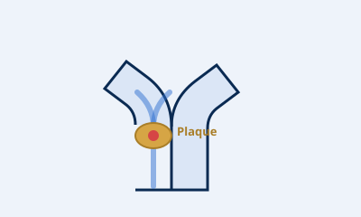

Overview
The carotid arteries run up either side of the neck and carry blood to the brain. Carotid artery disease occurs when plaque narrows these arteries. Pieces of plaque or clot can break away and travel to the brain, causing a stroke or a 'mini-stroke' (TIA).
Because carotid disease often has no symptoms until a stroke or warning event, identifying and managing it early is important.
Symptoms
- Often none until a warning event occurs
- Sudden weakness or numbness of the face, arm or leg — usually on one side
- Sudden trouble speaking or understanding speech
- Sudden loss of vision in one eye
- These are stroke warning signs — call 000 immediately
Causes & risk factors
- Atherosclerosis (plaque build-up)
- Smoking
- High blood pressure
- High cholesterol
- Diabetes
- Increasing age
Treatment options
Treatment focuses on preventing stroke by controlling risk factors and, where narrowing is significant, restoring safe blood flow:
- Medications — blood-thinning and cholesterol-lowering therapy
- Managing blood pressure and diabetes, and stopping smoking
- Carotid endarterectomy — surgery to remove the plaque
- Carotid stenting in selected cases
What to expect
Assessment usually starts with a carotid duplex ultrasound to measure any narrowing. Dr Wong will weigh your stroke risk against the benefits of treatment and recommend the safest approach for you.
This information is general and is not a substitute for medical advice. Please see Dr Wong for advice about your individual situation.